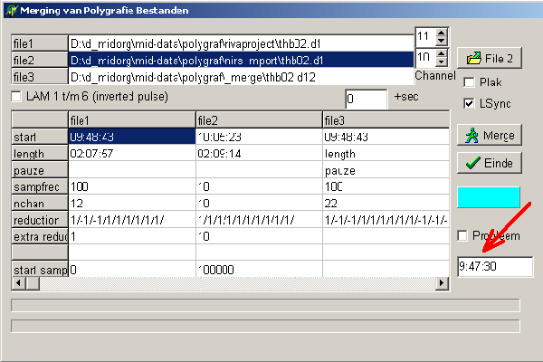
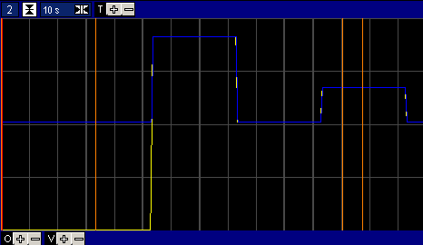
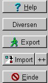
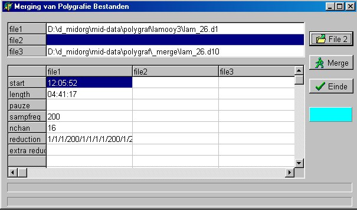

RF 2, Onset Systolische Bloeddruk
|
|
Midac NIRS import en merge 000805 |
|
|
april 2001 |
Als testbestand is de eerste opname van patient thb02 genomen.
Het blijkt dat de klokken van beide PC's sterk afwijken:
Midac opname is gestart op 9:48:43
NIRS opname is gestart op 10:05:23
Als we de NIRS import bekijken, zien we dat de syncpuls start op 63 seconden.
Met andere woorden, de NIRS opname moet gestart zijn op 9:48:43 - 00:01:03 = 9:47:40

Kookboek Merging 

Kookboek Merging 
Uitbreiding speciaal voor lam experimenten CAKN:
|
 |
 |
NIRS bestanden (*.oxy) worden automatisch herkend en kunnen inclusief de events direct (dus zonder verdere instellingen) worden geïmporteerd.
Bij het importeren worden de OD-waarden door 2 gedeeld, de AD-kanalen blijven ongeschaald.
Er worden de volgende signaalnamen toegekend, voor OD waarden
OD-s,r
waarbij s=sender nummer en r=receiver.nummer.
Voor de AD-kanalen wordt de volgende benaming gebruikt:
AD-x
Waarbij x=AD-kanaal nummer.
Systeem events van NIRS worden in Midac verplaatst naar F8 events en user events naar F7.
Zie voor meer informatie Import.
1. Patient "00merge"
Onder deze patientnaam zijn de resulaten van alle testen opgenomen
2. Korte NIRS opname met ruime variaties
..\mid-data\nirs\sample.oxy
..\mid-data\nirs\sample.evt
Dit is een NIRs data set, waarin nagenoeg alle mogelijkheden voorkomen. Het is een opname met 3 golflengten, 2 ontvangers en 4 AD-kanalen. De opname bevat een pauze en enkele user-events.
3. Import Template
..\protocol\polygraf\_od.ini
Template dat 3 golflengte voor 2 receivers en 4 AD-kanalen weergeeft.
Bovendien worden met een rekenfunctie de marker teksten zichtbaar gemaakt.
4. Testopnamen lam-26
..\mid-data\nirs\lam_26.oxy
..\mid-data\nirs\lam_26.evt
..\mid-data\nirs\lam_26b.oxy
..\mid-data\nirs\lam_26b.evt
..\protocol\polygraf\lamooy3\lam_26.x1
lam_26.oxy kan wel geimporteerd worden (zij het met moeite, rubbish aan het einde) maar vertoont geen enkele tijdsrelatie met midac opnamen.
lam_26b.oxy wordt goed geimporteerd en wordt gemerged met de tweede helft van het Midac bestand. (in het begin van de opname is een klein fazeverschil van 1 seconde aanwezig, dat geleidelijk verdwijnt. Dit is een gevolg van de beperkte nauwkeurigheid welke altijd in het begin te zien is, omdat gesynchroniseerd wordt op het einde)
5. Testopnamen lam-33
..\mid-data\nirs\lam_33.oxy
..\mid-data\nirs\lam_33.evt
..\protocol\polygraf\lamooy3\lam_33.x?
Op zich lijkt de import en merging goed te lukken, echter ook hier weer invertering en 5 seconden verschil in het begin
© Copyright Instrumentele Dienst, 1999 SM, last updated 24-04-2001
SM, last updated 24-04-2001